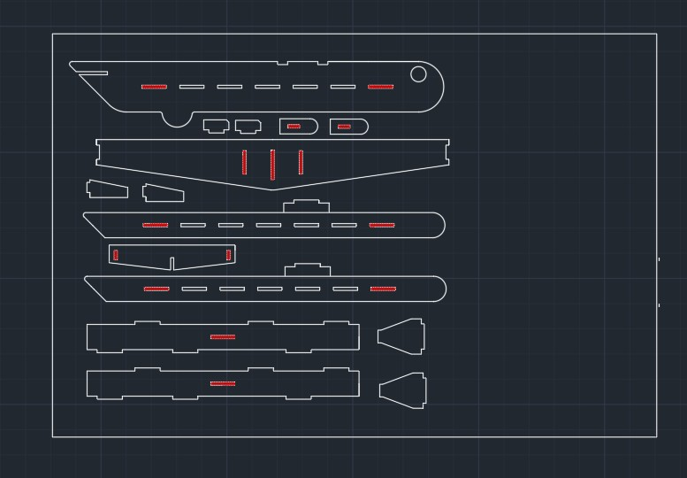
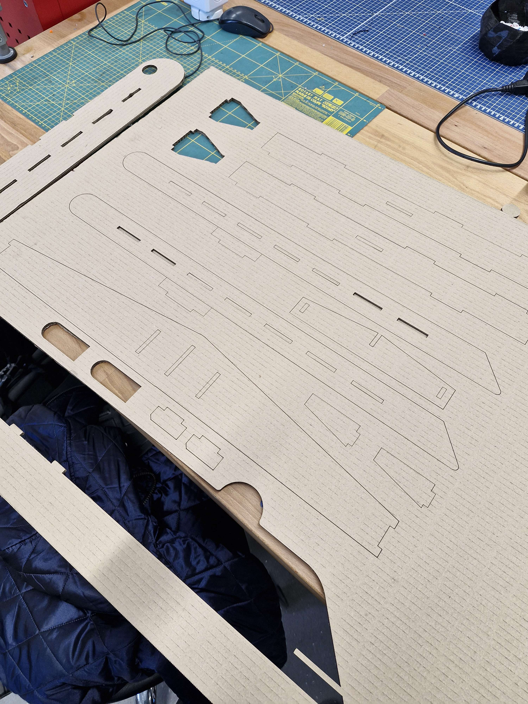
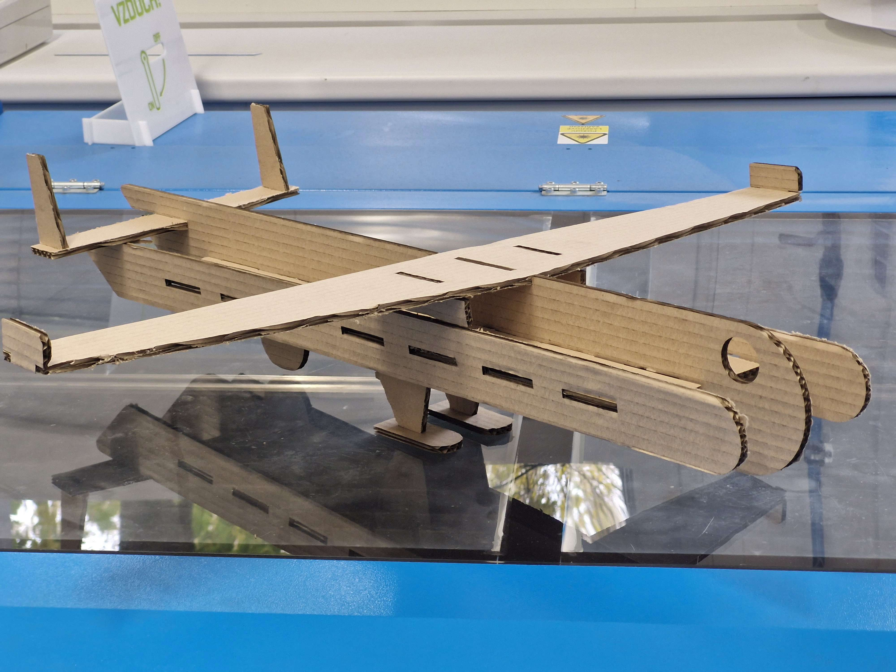

Úkolem tohoto miniprojektu bylo vytvořit sestavu vyrobenou z kartonu na laserové řezačce dostupné ve StrojLabu konstruování. V celé sestavě nesmí být použito lepidlo ani jiné adhezivní prvky, tudíž jediná možnost spojů jsou vyřezané zámky.
Mým návrhem pro tento projekt bylo jednoduché letadlo. Jedná se o “těžítko”, které není určené k letu, neboť není uzpůsobeno pro let, jedná se pouze o statickou ukázku.

Po vytvoření podkladů pro laser jsem se mohl vrhnout na výrobu dílů, které budu následně spojovat.

Sestava probíhala velmi jednoduše, jednalo se o “skládačku” kde do sebe jednotlivé díly zapadaly pomocí zámků a uložení s přesahem.
